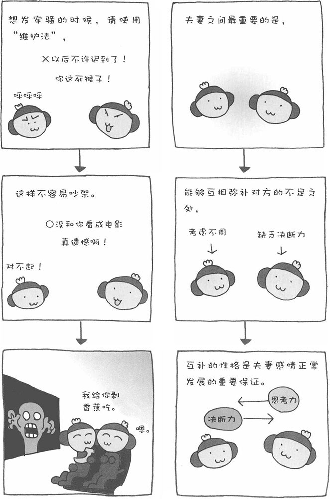

夫妻在一起生活，磕磕碰碰是难免的，吵架也时有发生。当夫妻间产生矛盾时，关键是如何化解矛盾、避免吵架。可以说，避免吵架的技巧，也是夫妻间保持感情的秘诀。我们发怒其实是"不安"和"恐惧"的一种防卫反应或警告反应。
当人发怒时，体内会分泌出一种令人兴奋的荷尔蒙，它使人心跳加速、血压直线升高。当大脑察觉到这种变化后，会使人的愤怒程度进一步增强，让人感觉血液一下子涌上大脑。特别是夫妻之间吵架时，由于没有人劝架，双方都没有台阶可下，容易造成恶性循环，使双方的愤怒程度不断升级，以致用家里的物品出气，甚至还可能发展成家庭暴力。因此，这样做虽然可以发泄心中的怒火，但也容易演变为更大的愤怒。
那么，有没有办法可以避免或者解决夫妻间吵架的问题呢？也许有人会说，当发生矛盾时，夫妻双方都少说两句，冷静一下就好了。可是，如果把想说的话都憋在心里，不满会在内心淤积起来，对对方的不信任感也会累积。久而久之，这种不信任感会导致对对方完全丧失信任，这是婚姻最大的敌人。因此，产生矛盾时保持沉默并非防止吵架的好办法。
此时，我建议使用"维护法"，即将对方的所作所为和由此造成的危害以及自己的想法传达给对方。举例说明，比如丈夫回家太晚，妻子不要劈头盖脸就是一顿骂："你怎么这么晚才回来？"这样做的结果大多都会引起一场不愉快的争吵。如果采用"维护法"，妻子应该这样说回来这么晚应该先打个电话回来（行为），晚饭我也白做了（影响）。本来想和你共进晚餐的，真遗憾啊！（感情）"。这样说，不仅可以表达自己的想法，还不带有攻击性，能够发挥警告的作用。实际上，发怒的目的无非也是警告。
夫妻感情好，大多是因为性格互补，但互补的性格也是两种不同的性格，因此产生不同的意见也是理所当然的事情。此时，说出自己的想法，并尊重对方的意见是非常重要的。记住，在表达自己想法的时候，不要忘记带上微笑。这样，您的话才更容易打动对方的心。
